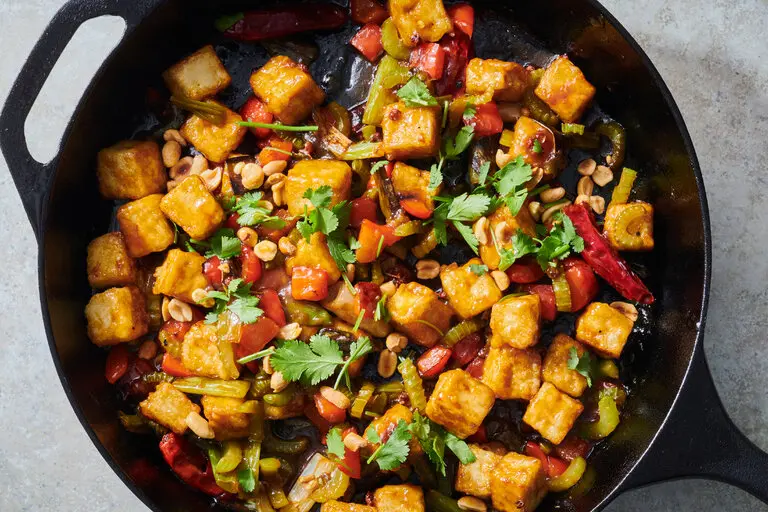

Kung Pao Tofu

Description
Fiery from dried chiles, tingling with Sichuan peppercorns and studded
with peanuts, this kung pao tofu recipe is a vegetarian take on kung pao
chicken, the classic Chinese American restaurant staple. Though variations
on this dish abound, this version swaps in tofu for chicken, treating the
tofu similarly. Pressing the tofu removes excess moisture, leaving more room
for flavor to penetrate and giving it a denser, chewy texture. The cornstarch
coating helps the tofu brown, makes it crisp and acts as a sponge for the savory,
spicy, tingly sauce.
Ingredients
- 1 (14-ounce) package extra-firm tofu
- 1/4 cup soy sauce
- 2 tablespoons of brown sugar
- 2 tablespoons of hoisin sauce
- 2 tablespoons of rice or wine sake
- 1 tablespoon of black vinegar
- 2 tablespoons of toasted sesame oil
- 1/2 teaspoon ground white pepper
- 3 garlic cloves
- 1 (1-inch) piece fresh ginger
- 2 teaspoons cornstarch
- Salt
- Grapeseed oil
- 1 red bell pepper
- 2 celery stalks
- 4 scallions
- 1/3 cup roasted peanuts
- White rice
Steps
- Drain the tofu, wrap in a clean kitchen towel, set on a plate and put a cast-iron
skillet or other weighty object on top. Let it press for at least 10 minutes and up
to 1 hour.
- While the tofu is pressed, prepare the sauce: In a medium bowl, whisk the soy sauce,
brown sugar, hoisin, rice wine, vinegar, sesame oil, white pepper, garlic, ginger, 2
teaspoons cornstarch and 1/3 cup water until combined.
- After the tofu has been pressed, unwrap it and cut into 3/4-inch cubes. Transfer tofu
to a medium bowl, season with salt and coat in 1/4 cup cornstarch; set aside.
- In a large cast-iron skillet over medium-high heat, add enough neutral oil to coat
the bottom of the pan. When it starts shimmering, add the tofu. Cook until one side
is golden brown and crisp, about 3 minutes, then flip. Cook until the other side is
crisp and golden brown, another 3 minutes. Remove with a slotted spoon and transfer
to a plate.
- Add the red bell pepper, celery and scallions. Cook, stirring occasionally, until the
red bell pepper starts to soften while maintaining some bite and the vegetables char, about
4 minutes. Add the Sichuan peppercorns and chiles and cook until fragrant, about 1 minute.
Add the tofu and sauce, and stir to coat; make sure the sauce simmers and thickens, about
2 minutes. Finish with the peanuts and cilantro, stir again, then serve immediately with rice.